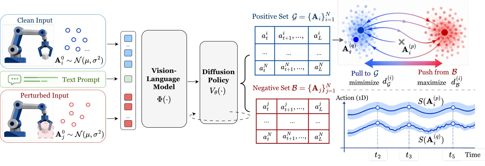
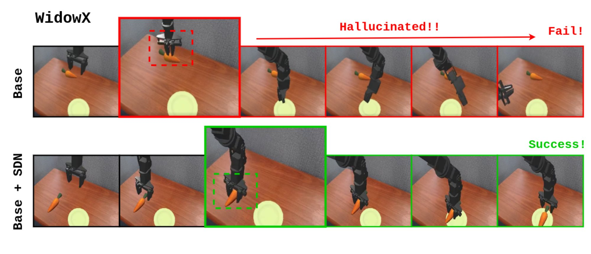
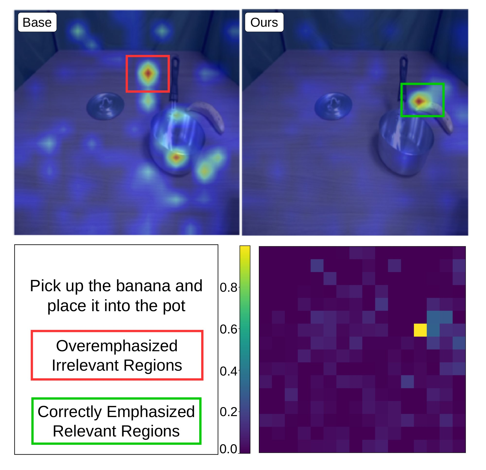
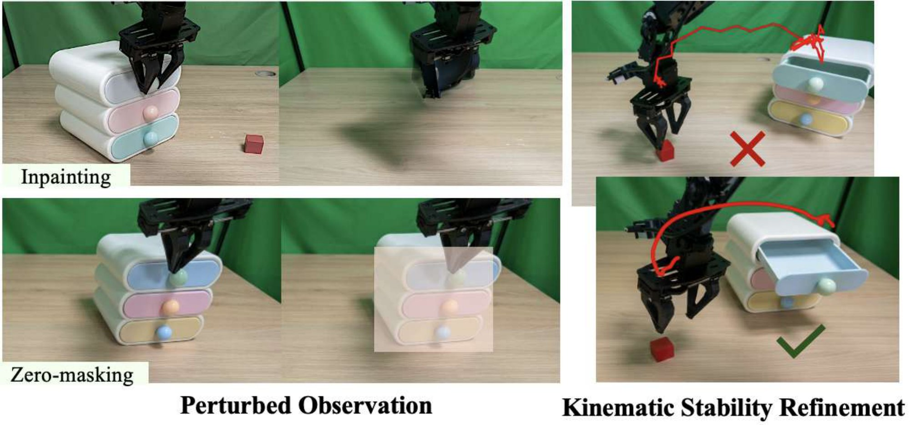
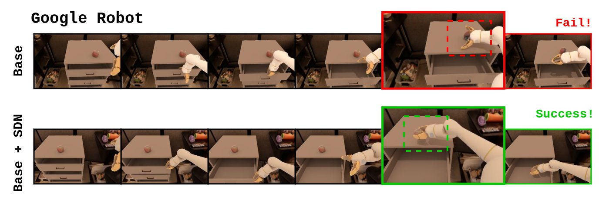
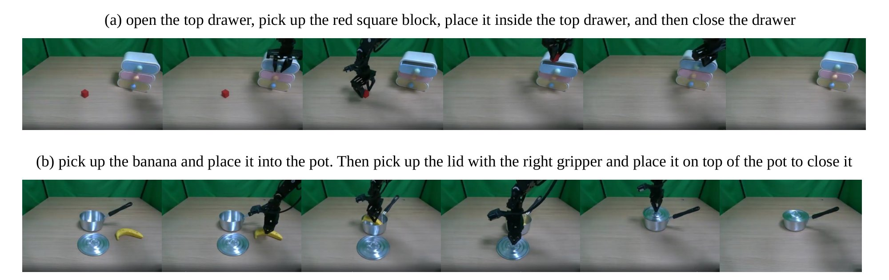
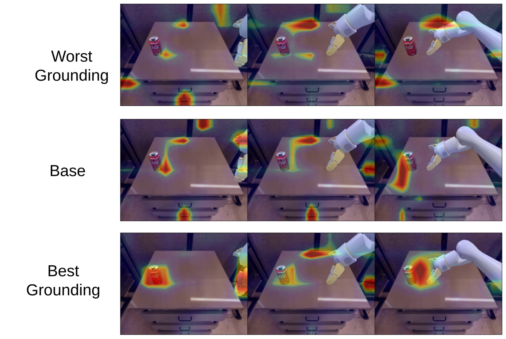
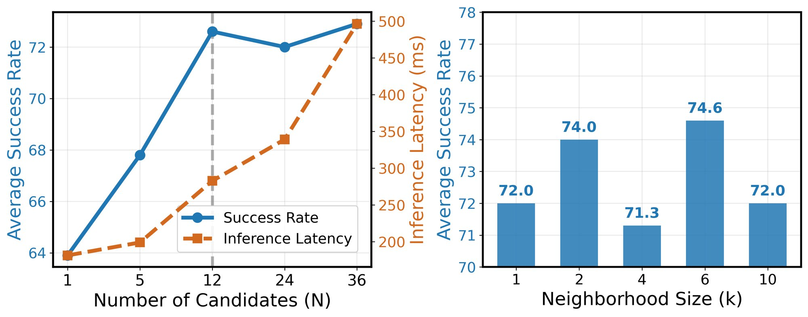
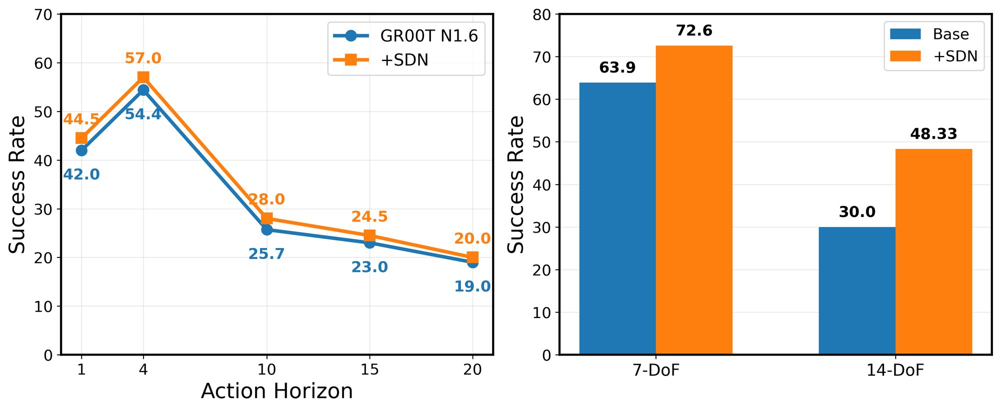

The initial noise is a free choice at test time. SDN chooses it.
Diffusion-based Vision-Language-Action (VLA) policies generalize well in robot manipulation, but their deployment can remain unreliable. Spurious visual reliance and stochastic action generation lead to grounding failures and kinematically unstable behaviors, and fine-tuning a multi-billion-parameter policy for every new variation is costly and risks catastrophic forgetting.
We introduce Selected Diffusion Noise (SDN), a training-free method that treats diffusion noise as a controllable degree of freedom for improving test-time reliability. SDN samples multiple candidate action chunks and applies two-stage selection: it first filters candidates by task-relevant visual grounding, using a counterfactual negative set, and then selects the kinematically most stable chunk by JerkRMS. Across three VLA policies (π0, GR00T N1.5 and N1.6), SDN improves success by 5 to 9 points on the SIMPLER simulation benchmark and by 18.33 points on real-world ALOHA tasks, without updating any parameters.
Two ways a frozen VLA fails at deployment
The policy relies on task-irrelevant visual cues. In “put the carrot on the plate” it may decide the grasp worked and carry nothing to the plate.
A chunk can be semantically right and still move with abrupt, oscillating accelerations that destabilize execution and wear the hardware.
Both kinds of failure receive real probability under the same observation and instruction, so different initial noises give good or bad chunks.
A conceptual decomposition of the policy: pfail collects the incorrect or unstable chunks that come from approximation error and spurious correlations, with a context-dependent weight ε. These chunks are not random outliers, so the question becomes which sample to execute.


Sample N chunks, keep the grounded ones, execute the smoothest
Guidance methods such as CFG steer every denoising step with a second vector field, and a field for “failure” would need labeled failures, an extra model and a sensitive guidance scale. SDN instead selects globally: it draws chunks from different initial noises and picks one, without touching the denoising process. Try it below on a toy action space.
A toy illustration. Points stand in for action chunks, and the positions, modes and trajectories are synthetic; the scores are the paper's equations. In the paper each chunk is a full action sequence (horizon × DoF), the masks come from Grounding-DINO and SAM2, and SDN uses N = 12, k ∈ {6, 10}, M ∈ {3, 5}.
Close to the clean samples, far from the counterfactual ones
The negative set comes from the same policy with the task-relevant objects removed from the image, either by zero bounding-box masking or by inpainting. Those chunks can only follow spurious cues. A grounded chunk should be likely under pG and unlikely under pB, so SDN ranks by the log density ratio, estimated with k-nearest-neighbour distances:
When the detector finds no target object, the perturbation is disabled and the score falls back to −dG, the densest candidate of the positive set.
Among grounded chunks, the one with the least jerk
The top-M candidates are scored by the RMS of the discrete jerk. SDN predicts chunks longer than the executed horizon, so oscillations that only build up later in the chunk still count.
Unlike methods that alter attention or inject noise to make the output smoother, SDN measures the smoothness of each sampled chunk directly.

- for i = 1 … N: Ai0 ~ N(0, I), Ai ~ πθ(·|o, ℓ) into G
- if target object is detected then
- for i = 1 … N: Ãi ~ πθ(·|oneg, ℓ) into B
- Rground = dB − dG for every Ai ∈ G
- GM ← TopM(G) ▷ Stage 1
- A* ← argmin S(Ai) ▷ Stage 2
- else
- A* ← argmin dG ▷ positive grounding only
- return A*
The score ranks like the true density ratio
Local density is inversely proportional to the neighbourhood volume, so log pS ≈ −log dS + C and the log density ratio becomes log dB − log dG; SDN uses the difference of distances as a monotone surrogate. The paper's appendix shows that for k, N → ∞ with k/N → 0:
so the empirical ranking is asymptotically consistent with the population score pB−1/D − pG−1/D: high where the clean policy puts mass and the counterfactual one does not.
Nine tasks, two robots, two backbones
Five Google Robot and four WidowX tasks from SIMPLER (task selection following PCD), 50 rollouts per task, official pretrained checkpoints, and no training. Baselines are training-free too: CFG (null-instruction guidance), WNG (white noise injected into action features), BYOVLA (edits task-irrelevant image regions), ACG (identity attention as the incoherent field) and PCD (contrasts predictions on original and object-masked images). SDN uses bbox zero-masking for the negative set.
Full table: all methods (underlined = best in column; subscript = SDN minus vanilla)
SDN has the best average with both backbones: 72.6 with π0 (+8.7) and 54.5 with GR00T N1.6 (vanilla 49.5). With GR00T N1.6 it more than triples Open Drawer (4 → 14) and adds 14 points on Move Near. It also does no harm: across all 18 task–backbone pairs it never scores below the vanilla policy, while CFG, WNG, BYOVLA, ACG and PCD each lose to the vanilla policy on some tasks, and BYOVLA drops π0 to 40.0 on average.

Bimanual ALOHA: higher success and smoother motion

Task success
Success rate (%). Both stages help on their own, and together they are best on average.
Motion quality
JerkRMS and action total variation (ATV, ×102); lower is better. Subscripts: change relative to the vanilla policy.
SDN is the only method that lowers both metrics. Every guidance baseline raises them, ACG most of all (+114% jerk on Banana2Pot): a hand-designed negative direction can push the policy out of distribution and into high-frequency oscillation.
SDN reaches 48.33% against 30.00% for the vanilla policy and 41.67% for the best baseline. These tasks need fast grasping and placing, where enforcing smoothness could hurt; instead Stage 2 alone adds 16.67 points, Stage 1 alone 13.33, and the full pipeline 18.33.
Why the negative set works, and what the filter selects
Masking the target collapses the policy
Success (%) when the task-relevant objects are masked or inpainted, and when random task-irrelevant regions are masked instead. Without the target, the policies fall back on background shortcuts; this is the behavior the negative set captures.
| Policy | Google Robot | WidowX | Avg. |
|---|---|---|---|
| π0 | 56.4 | 73.4 | 63.9 |
| + masked object | 6.0 | 0.0 | 3.0 |
| + inpainting | 5.0 | 0.0 | 2.5 |
| + random masking | 56.0 | 72.0 | 64.0 |
| GR00T N1.6 | 45.6 | 54.4 | 49.5 |
| + masked object | 2.8 | 0.0 | 1.4 |
| + inpainting | 2.0 | 0.0 | 1.0 |
| + random masking | 46.0 | 54.0 | 50.0 |
The filter picks less spurious actions
Nuisance Mass Ratio (NMR, from VLA-Explain) of GR00T N1.6: the share of prediction-relevant tokens that fall on irrelevant regions. Lower is better. Picking the worst-grounded candidate raises it on every task, picking the best-grounded lowers it, and a larger pool lowers it further.
| Task | Worst N=12 | Base | Best N=12 | Best N=24 | Best N=36 |
|---|---|---|---|---|---|
| Pick Coke Can | 0.740 | 0.668 | 0.663 | 0.657 | 0.656 |
| Move Near | 0.780 | 0.705 | 0.679 | 0.660 | 0.667 |
| Carrot | 0.770 | 0.746 | 0.712 | 0.705 | 0.698 |
| Spoon | 0.700 | 0.684 | 0.666 | 0.661 | 0.664 |
| Average | 0.750 | 0.701 | 0.680 | 0.671 | 0.671 |

Robust to how the negative set is built
SDN against PCD, which also contrasts clean and object-removed observations, with both perturbations. SDN has the higher average in all four settings, and with cheap bbox masking it already beats PCD with inpainting, which PCD needs for its best results. Underlined: the better of SDN and PCD for that perturbation.
Robust to its own hyperparameters
π0 on SIMPLER. Success rises from 63.9 at N = 1 to 72.6 at N = 12 and then saturates while latency keeps growing, so SDN uses N = 12. Every neighbourhood size k lands between 71.3 and 74.6.

Across horizons and action spaces
Gains hold at every action horizon with GR00T N1.6, and for both 7-DoF (π0, SIMPLER) and 14-DoF (bimanual ALOHA) action spaces.

- The perturbations are object-centric, so they may miss spurious behavior caused by dynamic lighting, texture shifts or broader environmental distractors.
- The number of candidates, k and M are fixed at inference time rather than adapted to the difficulty or uncertainty of each step.
- Sampling a negative set and several candidates costs extra inference compute; latency grows with N.
BibTeX
@article{nguyen2026sdn,
title = {Test-Time Improvement of VLA Policies via Selected Diffusion Noise
for Spurious-Robust Action Smoothing},
author = {Nguyen, Duc Minh and Dao, Bao-Ngoc and Luu, Tung M. and Nguyen, Binh Gia and
Tong, Vinh and Liu, Anji and Duong, Vu N. and Le, Dung D. and Sonntag, Daniel and
Le, Trung and Le, Ngan and Peters, Jan and Le, An Thai and Vu, Minh Nhat and
Niepert, Mathias and Doan, Khoa D. and Nguyen, Duy M. H. and Ngo, Vien Anh},
year = {2026}
}